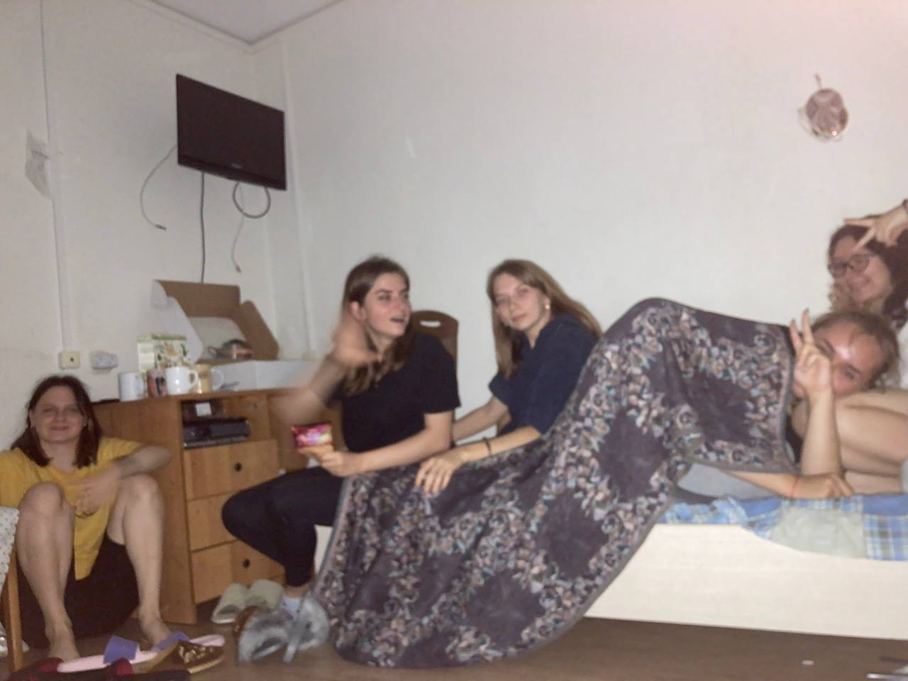

Аня Морозова
Самый прелестный цветочек в этом широком поле...
Самый прелестный цветочек в этом широком поле...
Аня - это девчонка, которая обожает капучино Амаретто, сосиски в тесте, гороскопы и группу
"Нервы". Еще она любит играть на укулеле, хотя и делает это не так часто, как хотелось. Любит
фотографировать, обнимацца и еще много-много всего...
Ой, совсем забыла сказать, что Аня обожает корги))
А еще Аня любит учиться, поэтому входит в клуб заучек УИР-1. Только тсссс... Это будет наш
маленький секретик... Её самые любимые предметы - веб-дизайн и экономика организации.
На фотоографии справа вы можете посмотреть, как прилежно мы учимся!!!
Я очень скромная, никогда не хвастаюсь и не выпендриваюсь, и поэтому хочу сказать, что у Ани есть просто замечательные друзья. Наша "Омерзительная восьмерка". Знай, что ты всегда можешь на нас положиться!!!!!!!! (и в прямом, и в переносном смысле)
